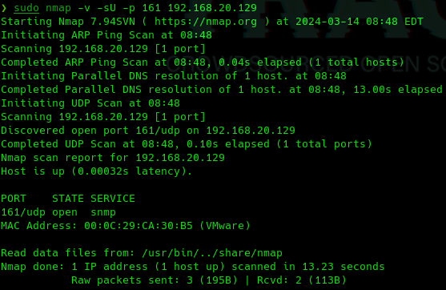
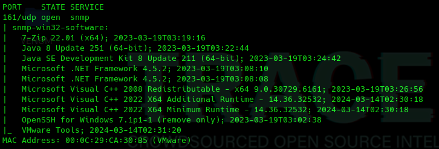

Protocolo SNMP
Es un protocolo de red que nos sirve fundamentalmente para gestionar, ya sea obtener datos, cambiar algunos aspectos de la configuración del comportamiento de dispositivos de red, como puede ser por ejemplo, un router, un switch pero, también de servidores
Es un protocolo que en la mayoría de las ocasiones está mal configurado en muchos servidores y permite la obtención de mucha información.
Este protocolo se ejecuta en el puerto 161 y funciona por UDP
sudo nmap -v -sU -p 161 192.168.20.129

sudo nmap -v -sU -p 161 --script=snmp-win32-software 192.168.20.129

sudo nmap -v -sU -p 161 --script=snmp-win32-users 192.168.20.129
sudo nmap -v -sU -p 161 --script=snmp-processes 192.168.20.129
sudo nmap -v -sU -p 161 --script=snmp-netstat 192.168.20.129